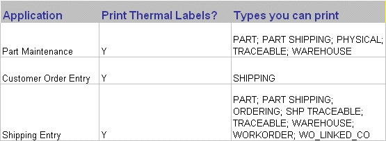

The Label Printer Setup Utility allows you to create thermal labels to use when shipping containers.
|
The process of creating thermal labels that contain VISUAL database fields involves a 3rd party piece of software. Loftware, a complete barcoding software solution, must be present on at least one client machine before you can create .lwl files. Lwl files allow VISUAL to associate the fields in the label you design using Loftware with VISUAL database fields. For more information on implementing Loftware and designing labels, contact your Infor Global Solutions Partner. Also, ask your associate about the Infor Global Solutions Barcoding manual, a comprehensive guide to implementing, designing, and effectively using barcoding systems throughout your enterprise chain. |
In addition to the label types available in previous versions of VISUAL, a new type, PART_SHIPPING, is available to automotive users.
The PART_SHIPPING table allows you to enter selected data for a given Part ID, combined with a given Ship To ID, for a given Customer ID. The Customer ID is not required as part of the key in this table if the Shipto ID is unique within the CUST_ADDRESS table, and is not a combined key with the Customer ID.
From the Admin menu, select Labels Printer Setup Utility.
The Barcode Label Printer Setup Utility window appears.
In the Label ID field enter an ID for the label. To modify an existing Label ID, click the Label ID button to browse the LABEL_FORMAT field.
Enter a description of the Label ID into the Description field. Click the Description button to choose an existing description. Choosing an existing description prompts VISUAL to auto-fill the Label ID field with the associated Label ID.
Click the Label File button to choose the Loftware label file you want to use for this label. These files have an extension of .lwl. For more information, consult your Loftware documentation.
If you have run the necessary print on demand utility (see your Loftware documentation) the fields on the Loftware label appear in the Data type fields.
From the Label Type list box, select the label type. Label type PART_SHIPPING is new for release 6.3, and is used primarily for automotive shipping labels.
The chart below lists the applications automotive users most often use, and the types of labels you can print from those applications.

After selecting a label type, VISUAL displays all available data tables in the Available Data Tables list box.
From the Label Printer list box, select the thermal label printer you want to use to print the label.

You must install thermal labels printers before you can print to them.
In the Copies field, enter the number of copies of this label you want VISUAL to print to the thermal printer. This becomes the default.
Begin to associate VISUAL database fields to the Loftware fields by using the left and right arrow keys or dragging and dropping fields onto The Selected Data Field field and the Loftware Label field.
Click the Save button or select Save from the File menu to save the label.